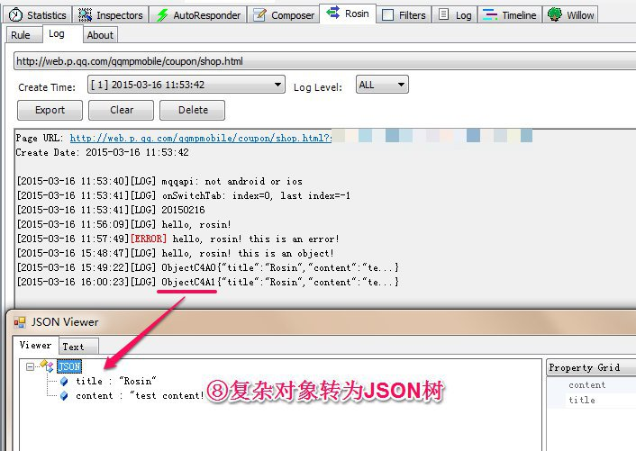

Rosin
Rosin是一个Fiddler插件，协助开发者进行移动端页面开发调试，是移动端web开发、调试利器。
版本
v1.0.0
下载安装
下载对应Fiddler版本的Rosin，解压之后运行RosinInstall.exe安装
( 如果电脑有权限控制，请 "右键->以管理员身份运行" )
Roisn for Fiddler2
Rosin for Fiddler4
特性
- 拦截console输出
- Fiddler面板展示
- 页面规则配置
- 日志内容处理
- 脚本错误捕获
使用方法
1、打开Fiddler，切换到Rosin Tab
2、点击“Add Rule”按钮，打开规则添加面板
3、选择规则匹配类型，支持三种匹配类型：
Host——域名，如：qq.com
Path——路径或者具体的页面地址，如：http://web.p.qq.com/coupon 或者 http://web.p.qq.com/coupon/demo.html
Regex——正则表达式，如：^http:\/\/web\.p\.qq\.com
4、输入具体的规则内容
5、打开测试页面，在测试页面代码中调用console打日志，或者在PC控制台模拟

6、回到Fiddler，切换到Rosin的Log选项卡，选择我们的测试页面，查看日志
7、对于复杂对象，双击Object字符区域选中，然后右键
8、复杂对象都会被转为JSON对象，生成一个JSON View

9、功能区，一些功能按钮，包括：日志文件导出、日志清空、日志文件删除
10、搜索功能，搜索框中输入文本，会自动高亮匹配结果，按Enter切换匹配区域
11、javascript运行时错误信息捕获，并且支持跨域情况下的捕获（还记得那些Script.error 0的错误吗）

更新日志
v1.0.0 -- 2015.01.20
- 支持日志级别按颜色区分
- 支持按级别筛选日志
- 支持日志文件导出
- 支持日志内容清除
- 支持日志文件删除
- 支持日志记录自动清理
- 支持日志内容JSON对象解析
- 支持script error信息输出
- 支持跨域script error信息获取
- 优化日志展示
v0.0.1 -- 2014.12.03
- 支持console日志接收
- 支持fiddler日志展示
- 支持页面规则配置
- 支持日志列表展示